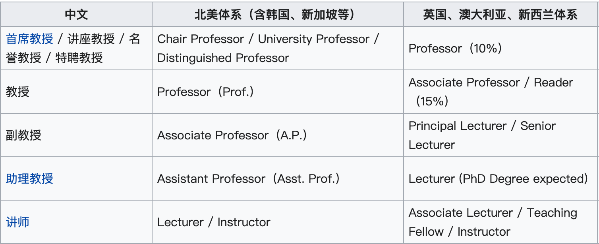

Home |
English |
中文版本 (Chinese)
English
We are looking for outstanding and highly motivated Ph.D. students (starting in Fall 2023 or earlier) to join our join Manchester Environmental Data Analytics Lab (MEDAL).
Students will be co-supervised by
- Prof. David Topping - Fellow of the Alan Turing Data Science Institute and Professor of Digital Environment
- Dr. Zhonghua Zheng - Assistant Professor (UK Lecturer) in Data Science & Environmental Analytics
- Dr. Congbo Song - Senior Research Scientist in Data Science and Analytics in Atmospheric Air Pollution at the National Centre for Atmospheric Science (NCAS)
Our research projects include but not limited to:
- Data-driven Urban Climate Modeling and Urban Heat Stress Projections
- Data-driven Climate Adaptation Planning in Urban Areas
- Net Zero Carbon Cities and Global Climate Change
- Urban Climate Digital Twins
- Data-driven Aerosol and Air Quality Modeling
Prospective students with a background in Computer Science, Data Science, Applied Mathematics, Environmental Science and Engineering, Biosystems Engineering or other related fields are encouraged to apply.
We prefer students with a M.S. (or MSc) degree.
Please fill out the form (before contacting us) if you are interested in working with us.
Note:
- This year, we are providing a "Ph.D. Studentship" (3-year tuition free with stipend), but solely to United Kingdom citizens.
- Qualified international candidates are encouraged to apply the scholarships (e.g., President’s Doctoral Scholar, and The University of Manchester-China Scholarship Council (UoM-CSC) Joint Scholarship, etc.).
- Qualified candidates are encouraged to apply the scholarships, including but not limited to:
- HERE are some funding & scholarship opportunities (subject area is "Earth and Environmental Sciences").
- Self-financed Ph.D. and Part-time Ph.D. opportunities are available year round.
The University of Manchester, in its present form, was created in 2004 by bringing together The Victoria University of Manchester (created 1824) and UMIST.
Twenty-five Nobel Prize winners have either studied or conducted some of their work here:
Rutherford began his work on splitting the atom here and the world's first modern computer also came into being at The Victoria University of Manchester.
Professors Andre Geim and Konstantin Novoselov were awarded the Nobel Prize for Physics in 2010.
As a global institution, situated at the heart of a lively, culturally diverse city, we welcome applicants of all nationalities.
中文版本 (Chinese)
英国曼彻斯特大学环境数据分析实验室（Manchester Environmental Data Analytics Lab, 简称MEDAL）现诚聘优秀博士研究生，将由Prof. David Topping（阿兰·图灵研究所Turing Fellow，英国曼彻斯特大学Professor of Digital Environment）、郑中华博士（英国曼彻斯特大学数据科学与环境分析Lecturer、博士生导师）、宋从波博士（英国大气科学研究中心高级研究员）共同指导。另外，我们实验室常年欢迎访问学者和访问学生来访和合作研究。
我们实验室可支持申请以下以及其它符合条件的奖学金【申请难度：PDS > DDS > CSC】：
- 【每年1月底和3月底截止】Dean’s Doctoral Scholarship (DDS, https://www.se.manchester.ac.uk/phds-science-engineering/funding/deans-doctoral-scholarship/)
- 【每年1月底截止】President’s Doctoral Scholarship (PDS, https://www.se.manchester.ac.uk/phds-science-engineering/funding/presidents-doctoral-scholarship/)
- 全校最高荣誉奖学金，因此申请难度高于Dean’s Doctoral Scholarship
- 【每年1月中旬截止】曼彻斯特大学-CSC联合奖学金 (The University of Manchester-China Scholarship Council Joint Scholarship, 简称UoM-CSC Joint Scholarship, https://www.manchester.ac.uk/study/international/country-specific-information/china-mainland/scholarships/#country-profile)。
根据历年的结果，被学院提名者需同时满足以下条件：
- 至少发表过一篇SCI文章（可以不是一作）
- 毕业于知名高校（根据学校历年的结果，获奖者通常本科或者硕士毕业于985院校；若本科或者硕士毕业于海外的高校，毕业学校需要位列于Times Higher Education/THE排名世界前50，https://www.timeshighereducation.com/world-university-rankings/2023/world-ranking）
我们实验室相关研究方向主要集中在“数据科学 + 大气环境 + 气候变化”，包含但不限于：
- 数据驱动的城市气候建模、城市热岛效应及驱动力研究
- 数据驱动的气溶胶、空气质量建模
- 城市适应气候变化行动方案优化
- 低碳城市与全球气候变化
- 城市气候数字孪生
申请条件：
- 英语成绩（不接受托福拼分，有英语国家学位可以申请豁免）：雅思6.5（单项不低于6.0）或托福90（单项不低于20）
- 具有硕士学位优先考虑
- 计算机科学与工程、数据科学、应用数学、大气科学、环境工程与科学、生物系统工程等背景的同学优先考虑
申请流程：
学校、实验室、城市简介
-
曼彻斯特大学（The University of Manchester），简称曼大，始建于1824年，位于曼彻斯特，是英国最大的单一校址大学，是一所门类齐全、科系众多的综合性大学，属于英国“红砖大学”、英国罗素集团的创始成员、大学研究协会、国际大学气候联盟成员。
曼彻斯特大学在全球四大权威世界大学排榜单中均位列世界前70位：最新QS世界大学排名第28位、软科世界大学学术排名第38位、THE世界大学排名第54位、U.S. News世界大学排名第63位，现任及过往教职员和学生中共有25位诺贝尔奖得主。
-
英国曼彻斯特大学环境数据分析实验室（MEDAL）由Prof. David Topping和郑中华博士在2022年秋季共同建立。实验室成员与海外及中国知名高校和国家实验室（例如美国麻省理工学院（MIT）、美国国家大气研究中心（NCAR）、哥伦比亚大学、伊利诺伊大学厄巴纳-香槟分校（UIUC）、浙江大学等）均有长期合作。
-
Prof. David Topping现任阿兰·图灵研究所Turing Fellow、曼彻斯特大学Professor of Digital Environment。
-
郑中华博士现任曼彻斯特大学Lecturer、博士生导师，方向为数据科学与环境分析。
郑中华博士本科毕业于浙江大学生物系统工程专业，之后毕业于美国伊利诺伊大学厄巴纳-香槟分校（UIUC），获土木工程与环境工程（计算科学与工程）博士学位、计算机科学硕士学位。
他在读博期间曾连续三年在拜耳公司（作物科学事业部）以及美国橡树岭国家实验室担任数据科学实习生（Data Scientist/Research Intern）。加入曼彻斯特大学前，他曾任美国国家大气研究中心（NCAR）高级研究项目（ASP）博士后研究员并开展独立研究。详情请见郑博士个人主页：https://zhonghuazheng.com/。
-
宋从波博士现任英国大气科学研究中心高级研究员，在南开大学获得环境工程博士学位，曾在伯明翰大学从事博士后研究，长期从事大气污染与污染源减排研究。详情请见个人主页：https://congbo.site/。
-
曼彻斯特是世界上最早的工业化城市，英国重要的交通枢纽与商业、金融、工业、文化中心，国际化大都市（也是著名的网红城市）。曼彻斯特有两家世界著名的足球俱乐部：曼彻斯特联（曼联，Manchester United）和曼彻斯特城（曼城，Manchester City）。
-
注：各体系中不同教职区别请见下表。
